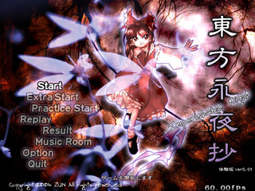

| ■タイトルメニュー |
|---|
| Ｓｔａｒｔ |
|
通常のゲームを開始します（難易度選択画面に移行します） |
| ＥｘｔｒａＳｔａｒｔ |
|
エキストラステージを開始します（条件を満たしていないと選択できません） 初期プレイヤー数３で固定され、コンティニューは出来ません |
| ＳｐｅｌｌＰｒａｃｔｉｃｅ |
|
スペルカードプラクティスを開始します（条件を満たしていないと選択できません） 一度見たことのあるスペルカードを選択して挑戦したり、スペルカードに関する様々な情報を見る 事が出来ます。 |
| ＰｒａｃｔｉｃｅＳｔａｒｔ |
|
プラクティスモードを開始します プラクティスモードは、１ステージだけをプレイするモードです。 その難易度、キャラ、武器で一度クリアしたステージまで選択できます（コンティニューしても可） 各ステージのスコアが記録されますので、スコアアタックも出来ます 初期プレイヤー数９で固定され、コンティニューは出来ません |
| Ｒｅｐｌａｙ |
|
保存したリプレイを再生するモードです |
| Ｓｃｏｒｅ |
|
スコア、御札戦歴、その他の情報を見るモードです |
| ＭｕｓｉｃＲｏｏｍ |
|
音楽室に入ります |
| Ｏｐｔｉｏｎ |
|
オプションモードに入ります |
| Ｑｕｉｔ |
|
ゲームを終了します |